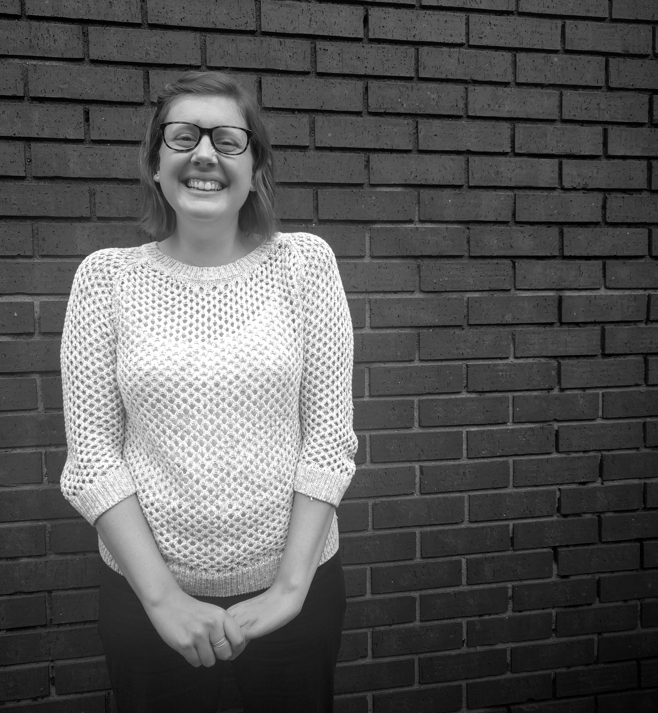

Hi, I’m Brenna. I’m an information professional currently working at Drake University. Since I was a kid, I’ve loved gathering information and compiling it to tell a story. As a prospect research analyst, I get to find and share the stories of our alumni. I’m a graduate of Knox College and earned my master’s in library and information science (MLIS) at the University of Wisconsin-Madison. Other things I like: running long distances, all things coffee, knitting and Parks and Rec.